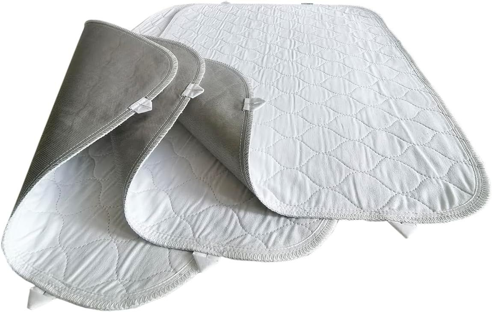

トレーナーの見解
シーツは道具であって、ゴールではない
アメリカン・ケネル・クラブ（AKC）は外での排泄が理想だとしつつ、とくに幼い子犬にはトレーニングシーツが役立つと述べています。一方で、子犬が2つの選択肢を覚えてしまうためシーツは扱いが難しいとも指摘しています。だからこそ、シーツそのものより習慣が大切です。
マンションで暮らす小型犬などのように、ずっとシーツを使い続ける飼い主もいれば、数か月で卒業する飼い主もいます。
 5
5ステップごとに
シーツから外へ、6つのステップ
場所を決める
シーツは毎回同じ場所に。寝床や食器からは離します。
タイミングを逃さない
起きたあと、食べたあと、水を飲んだあと、遊んだあとにシーツへ連れていきます。
すぐにほめる
すぐにごほうびを。あとから粗相を叱っても何も伝わりません。
ドアに近づける
数日ごとにシーツを少しずつドアのほうへ移します。
枚数を減らす
何枚か使っているなら、1枚ずつ減らします。
外へ
ワクチンを終えて大きくなったら、シーツではなく外の同じ場所へ連れていきます。

44おすすめの仕様
子犬向け Paw Guard
| サイズ | サークルやクレートには 24 × 36 in、広い床には 34 × 36 in |
| 表地 | 目の詰まったポリエステルニット、速乾 |
| 裏面 | シリコン滑り止めドット |
| グレード | スタンダード（270 g/m²） |
| カラー | グレー、ミント、タン |
| 入数 | 4枚入り：敷く1枚、洗濯中1枚、予備2枚 |
子犬はどんな布でもかじる可能性があります。目を離さず、穴の開いたシーツは交換してください。「かじっても壊れない」といった表示は印刷しないでください。
出典
- APPA — U.S. pet industry and ownership, 2025
- FEDIAF — European Facts & Figures 2026
- 経済産業省――ペットフード協会 2024年調査の解説
- Global Market Insights — Pet Training Pads Market
- DataHorizzon — Washable Pet Pee Pad Market
- JAVMA 2013 — Urinary incontinence in spayed female dogs (566 cases)
- ACVIM consensus statement — canine urinary incontinence
- AKC — The ins and outs of potty pad training
- PetSmart — Dog crate size chart
- ASINsight — "washable underpads" Amazon US (Jul 2026)
- Dogster — Best washable dog pee pads; Reader's Digest — Washable dog pee pads
市場調査や小売のデータは第三者の推計で、対象範囲や時期によって異なります。獣医学的な数値は要約であり、医療上の助言ではありません。
洗える防水シーツのラインを立ち上げませんか？
販売市場、サイズ、数量をお知らせください。1営業日以内に仕様書と数量別価格をお送りします。